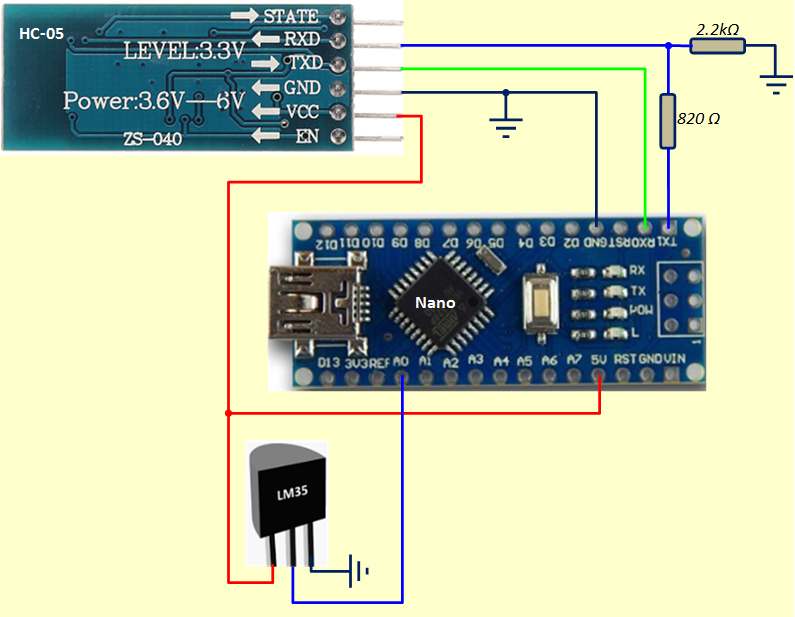
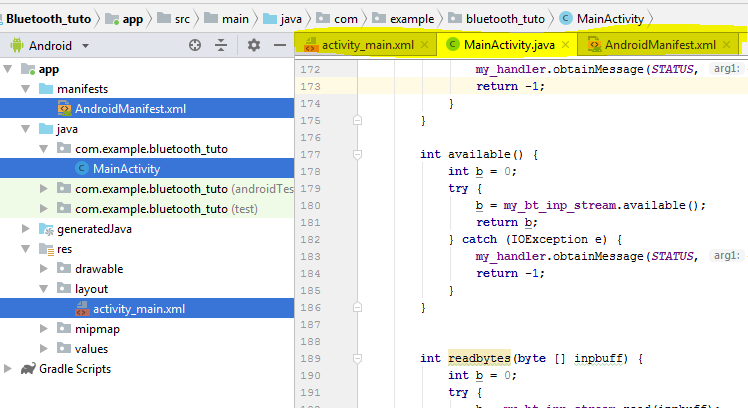

C'est quoi Arduino ?
Introduction
Dans ce petit tuto, nous allons apprendre à établir une liaison Bluetooth entre un Smartphone Android et et une carte de prototypage type Arduino à l'aide d'un module Bluetooth HC-05 (Je pense que n'importe quel autre module Bluetooth peut faire l'affaire)
On va faire simple, du coté du smartphone, on aura le choix entre 3 commandes à envoyer vers l'Arduino sous forme de caractères:
- 'A' ==> Allumer la LED embarquée sur l'Arduino (pin 13)
- 'B' ==> Éteindre la LED embarquée sur l'Arduino (pin 13)
- 'C' ==> Mesurer la tension analogique délivrée par le LM35 et transmettre le résultat de conversion vers le smartphone.
Branchement coté Arduino
J'ai choisi d'utiliser un Arduino nano, c'est plus petit et ça a les mêmes performances. Le branchement du module bluetooth ne pose pas de problème. Si les E/S (TXD, RXD) de votre module Bluetooth fonctionnent à 3.3V, il faut prévoir un petit diviseur de potentiel pour abaisser un peu le 5V délivré par la sortie TXD de l' Arduino. (J'ai essayé une liaison directe, ça marche, mais il y a un risque d'endommager le HC-05, c'est vous qui voyez, il vaut mieux ne pas tenter le diable). On va aussi brancher un capteur de température LM35 sur la broche A0 histoire d'avoir quelque chose d'intéressant à transmettre vers le smartphone.
Programme coté Arduino
Le programme n'a rien de spécial. On va quand même expliquer pourquoi on a utilisé l'instruction
analogReference(INTERNAL): Le capteur LM35 délivre une tension proportionnelle à la température avec
un rapport de 10mV par °C, si on travaille dans la plage [0 , 100]°C, la valeur max de la tension
délivrée par le capteur est 100 * 10mV = 1V. Donc, il est conseillé de forcer l'ADC de l'Arduino à
travailler dans une plage plus faible (que 5V) pour améliorer la précision. L'instruction
analogReference(INTERNAL) fixe la référence de l'ADC à 1.1V = 1100mV. Une simple règle de 3 permet
de déterminer la tension (V) du capteur à partir du résultat de convertisseur (NA). On divise
ensuite par 10mV pour obtenir la température T en °C.
1100 mV --------> 1023
V ----------------> NA
==> V = (NA * 1100) / 1023 mV
==> T = ( V / 10 mV ) = NA * 110 / 1023 °C
Remarque: Le programme Arduino se contente de faire la mesure et de transmettre le nombre NA vers le
smartphone, c'est ce dernier qui se charge de calculer la température T et de l'afficher en °C
/*
* Ce programme peut être utilisé avec une liaison série filaire
ou une interface Buetooth du genre HC-05
* Le hardware est constitué d'un Arduino avec une LED et
un capteur de température LM35
* On écoute le port série:
- Si on reçoit 'A', on allume la LED
- Si on reçoit 'B', on éteint la LED
- Si on reçoit 'C', on mesure le LM35 on on transmet le résultat de conversion LSB d'abord.
* On va utiliser l'instruction analogReference(INTERNAL) qui fixe la dynamique du
convertisseur à 1.1V, dans ce cas, si on note NA le nombre 10 bits issu de la
conversion, la température sera calculée ainsi: T = NA * 110.0 / 1023.0;
*/
#define LEDPIN 13
#define LM35PIN A0
char c=0;
uint16_t NA;
void setup() {
pinMode(LEDPIN, OUTPUT);
Serial.begin(9600);
analogReference(INTERNAL);
}
void loop() {
if (Serial.available() > 0){
c = Serial.read();
switch (c) {
case 'A':
digitalWrite(LEDPIN, HIGH);
break;
case 'B':
digitalWrite(LEDPIN,LOW);
break;
case 'C':
NA = analogRead(LM35PIN);
Serial.write((byte*) &NA , 2); //ordre little Indian, LSB d'abord
break;
default:
break;
}
}
}
Android Studio
Pour créer l'application qui sera installée sur le smartphone, les choses sont un peu plus compliquées. D'abord, il faut télécharger et installer Android Studio sur votre PC
Une fois installé, il faut commencer par faire quelques petits programmes simples pour se faire la main. Pour mettre en œuvre le Bluetooth dans une application Android il faut être familier avec la programmation sous Android: Activités, Boutons, TextView, ListView, Adaptateur de ListView, les Listners, les threads et les Handler de thread ...
Débogage sur smartphone
Pour mettre au point notre application Bluetooth, il faut faire les essais directement sur le smartphone. Les "virtual devices" d'Android Studio n'ont pas d'interface Bluetooth. Pour ce faire, il faut:
- Brancher le smartphone sur un port USB du PC et installer son driver si ce n'est pas déjà fait,
- Configurer votre téléphone en mode développeur (à faire une seule fois). Sur le mien, La
procédure est la
suivante:
Paramètres → A propos du téléphone→ Cliquer 7 fois sur Numéro de build
Ce n'est pas une plaisanterie, il faut vraiment cliquer 7 fois - Activer le mode débogage USB (sinon, Android Studio ne voie pas votre téléphone), sur le mien,
la procédure
est:
Paramètres → autres paramètres → Options développeurs → saisir le code de vérification (si demandé) → activer débogage USB - Normalement, chaque fois que vous lancer l'exécution du programme, AS vous montre une fenêtre qui vous permet de choisir entre votre téléphone ou l'Émulateur virtuel. Si cette fenêtre n'apparaît pas, c'est peut être que l'exécution est configurée sur l'un des deux. Pour vérifier et modifier si nécessaire: menu AS → Run → Edit configuration → Target → faire votre choix
- Des fois, si l'application est déjà sur le téléphone et on continue à travailler dessus, quand on lance l'exécution sur AS, le programme refuse de s'installer sur le téléphone. Ça m'est arrivé une fois (je ne sais pas pourquoi), J'ai désinstallé l'application, j'ai recommencé, ça a marché
- Une fois la première implantation réussie, après chaque modification du programme, il suffi de cliquer sur le bouton applay changer (si actif) pour envoyer la nouvelle version sur le téléphone (c'est plus rapide)
Associer le HC-05 avec le smartphone
Utilisez l'icône Bluetooth de votre smartphone pour afficher les équipements Bluetooth et associer le HC-05. La première fois, il demande un code pin, normalement c'est 1234. Cette opération est à faire une seule fois.
l'Application Androïde
Une application androïde est constituée de plusieurs fichiers. Voici les plus importants
- Un fichier xml de configuration de l'application -> manifeste
- Chaque activité (écran de l'application) est gérée par deux fichiers:
- Un fichier xml qui décrit l'interface graphique (Layout)Un fichier java contenant le code des taches réalisées par l'activité
Au démarrage d'Android Studio, les deux fichier layout et java (de l'activité principale) sont ouverts. On peut basculer de l'un à l'autre grâce à leurs onglets. Pour ouvrir un autre fichier, il faut utiliser l'explorateur de l'application (à gauche)
Démarrer Android Studio, et créer un nouveau projet
Le manifest de l'application
Ouvrir le fichier AndroidManifest.xml et rajouter les modifications ci-dessous:
- Ajouter les permissions
- Désactiver la rotation automatique
<?xml version="1.0" encoding="utf-8"?>
<manifest xmlns:android="http://schemas.android.com/apk/res/android"
package="com.example.bluetooth_tuto">
<uses-permission android:name="android.permission.BLUETOOTH" />
<uses-permission android:name="android.permission.BLUETOOTH_ADMIN" />
<application
android:allowBackup="true"
android:icon="@mipmap/ic_launcher"
android:label="@string/app_name"
android:roundIcon="@mipmap/ic_launcher_round"
android:supportsRtl="true"
android:theme="@style/AppTheme">
<activity
android:name=".MainActivity" android:screenOrientation="portrait">
<intent-filter>
<action android:name="android.intent.action.MAIN" />
<category android:name="android.intent.category.LAUNCHER" />
</intent-filter>
</activity>
</application>
</manifest>